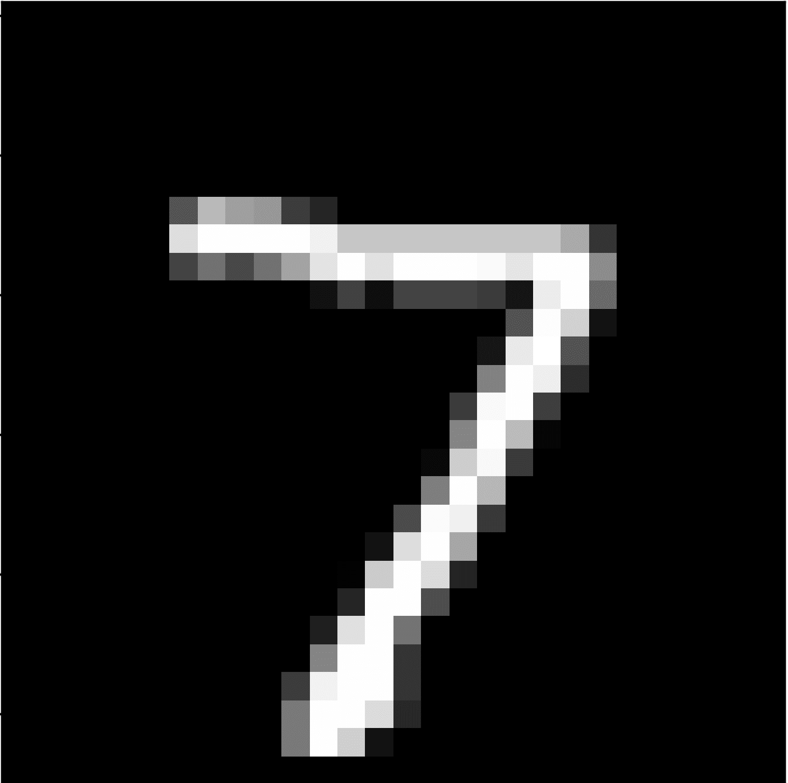

A Friendly Guide to Convolutional Neural Networks in Image Processing
What Is A Neural Network?
Neural Networks may sound intimidating, but don't worry!
They are often challenging to learn because they function as black-box algorithms where a lot of its mathematical processes are hidden.However, in this guide we will attempt to explain each step slowly and clearly to you so that at the end of this journey, you can fully understand how a neural network functions!
A neural network is a multi-layer network used in machine learning for classification.
Here are the layers that make up the network:
Input Layer: The initial data we start with before any calculation or manipulation has occurred
Hidden layers: The in-between layers where calcutions are performed.
Output layer: Prediction result is produced.
What is a CNN?
Convolution neural networks (CNNs) are a type of neural network. It follows the same architecture with an input layer, hidden layer, and output layer. However, there are more specificities in its hidden layers!
Here are four layers that make up a CNN:
Convolution Layer: A kernel is implemented to 'filter' the original image matrix.
ReLu layer: Rectified Layer Unit. Normalizes the matrix to only include non-negative numbers.
Pooling layer: Reduces matrix dimension to increase efficiency.
Fully connected layer: Analyses and identifies the object of the image.
Data InputIn our friendly guide to convolutional neural networks today we will be using the MNIST dataset for our example!
MNIST dataset stands for Modified National Institute Standard and Technology database and consists of 28x28 black and white images of handwritten single-digit numbers.This dataset is readily available online and can be found HERE.However, in order to use this dataset for training a neural network, it must be pre-processed into individual images and labeled.
What Number Is This?

CORRECT
WRONG
It may be easy for us to recognize what number this image is, but computers inherently are unable to recognize handwritten images.
1 = White Pixels ; 0 = Black Pixels
As such, they need us to label the numbers so Neural Networks can be trained to recognize patterns within these images.Fortunately, we do not need to hand-label the entire dataset as people have already done that for us! However, we do need to write code to pair up the right labels with the right image.
For those who are interested, an example code for that can be found HERE
What Is Convolution?CNNs are called Convolution Neural Networks because they include Convolutional Layers!
Convolution is a process in which we condense our original image matrix into a smaller matrix so that our algorithm can work more efficiently with a reduced number of parameters.In order to do so kernels and maxpooling must be implemented so successfully create a convolutional layer.
Kernels
To do so, we need to first implement a kernel, a smaller matrix that extracts certain 'features' from the original original. Kernels are vital as its feature extraction acts as a filter for our images!
In this example, we use a 5x5 kernel for our convolution. The numbers within the kernel changes the function and outcome. For more in depth information on kernels, visit THIS WEBSITE
ReLU Activation Function
After our convolutional, we apply a ReLU (Rectified Linear Unit) to introduce non-linear properties to our CNN model. This makes it easier for the model to adapt with the immense variety of data.
The ReLU activation function is quite simple as it only interprets positive elements in its argument. Any negative elements are set to 0 instead
Maxpooling
Now that we have a new, filtered 28x28 matrix, we can now condense it into a smaller matrix by implementing maxpooling!
Maxpooling is a pooling operation that looks for the maximum element within the rigion covered by the filter. Generally a 2x2 filter is implemented, meaning the resulting matrix is generally half the size of the original.
Let's Meet A Neural Network!
To get started in creating and assessing a neural network let's first create a workspace to do so!
We will be following the flow of a neural network step by step from its input, hidden layers, and output layer. Everything is occuring live as you press the following buttons so please be patient as certain elements can take a few seconds to load up!
*note: to restart this excercise please refresh the page
So the first step to setting up our CNN is to input data!
The images you see on your right are sprites radomly selected from our MNIST datase consisting of over 60,000 images! We are able to decipher these quickly; however, our system cannot yet. It currently sees these images as nothing more than an array of binary numbers.
Let us therefore move on and begin training our CNN!
Model Architecture
Under 'Layer Name' we can see that our CNN goes through
two convolution and max-pooling layers.
This is because by condensing our image matrix twice we can increase efficiency even more!
Under 'Output Shape' we can see exactly how the matrix is condensed with each max-pooling layer! By applying double convolution and max-pooling layers, we condense our original matrix to a 4x4 matrix. If we apply another layer of convolution and max-pooling we lose vital information which can lead to an incorrect image classification.
Model Training
Here we can actually see our CNN model being trained to classify the MNIST dataset live! If you scroll down on our workspace you can see we have two sets: one on batch end and one on epoch end. So let's go through what exactly that means!
On Batch End
On the batch end, there are a total of 110 batches!
This means that our sample of 500 individual sprites from the MNIST dataset are sent through the CNN Model in 110 groups--an estimate of 4 or 5 samples in each batch.
Over time, we can observe that the accuracy increases as loss decreases with each batch as our CNN model learns to recognize handwritten numbers!
On Epoch End
Whereas batches represent the individual samples, epochs represent groups of batches that have made complete passes through our CNN model.
9 Epochs = 110 batches passing through 9 times.
Similarly to the batch end, we can also find a loss and accuracy curve on the epoch end.
Accuracy
Now that our dataset is trained, we need to evaluate its accuracy!
Here we have a table displaying the accuracy of our CNN in predicting each handwritten number!In the first row we have have the 'category' of number from 0-9.In the second row we have have the accuracy of our CNN model in predicting that respective number.In the second third row we have then number of samples from each 'category' 0-9 that we trained our algorithm with.
The confusion matrix is another to view the accuracy of our model!This matrix showcases how many of each sample was actually predicted correctly out of the totaly dispalyed in the third row of our accuracy table.Look through and see what our CNN model accidentally wrongly predicted certain numbers as!.
Conclusion
Congratulations! Now you know what a CNN is! I hope you enjoyed the activity. If you hope to re-do the activity, please refresh the page (cmd+shift+r) to do so.
Vocabulary
Black-box Algorithm: An algorithm in which its mathematical processes are hidden, only displaying its input and output.
Input Layer: The initial data we start with before any calculation or manipulation has occurred
Hidden layers: The in-between layers where calcutions are performed.
Output layer: Prediction result is produced.
Convolution Layer: A kernel is implemented to 'filter' the original image matrix.
ReLu layer: Rectified Layer Unit. Normalizes the matrix to only include non-negative numbers.
Pooling layer: Reduces matrix dimension to increase efficiency.
Fully connected layer: Analyses and identifies the object of the image.
Batch: A smaller group of sample (ie. 4 samples in a batch).
Epoch: Number of passes each batch makes through the entire machine learning model.